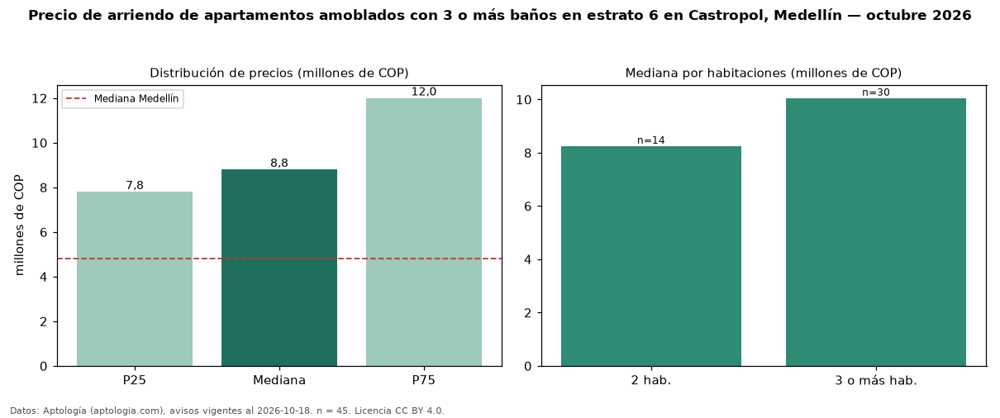

Precio de arriendo de apartamentos amoblados con 3 o más baños en estrato 6 en Castropol, Medellín — octubre 2026
Con 45 avisos vigentes, el canon mediano de apartamentos amoblados con 3 o más baños en estrato 6 en arriendo en Castropol, Medellín es COP 8,80 millones al mes. Eso es 7 % más que la mediana de los apartamentos amoblados en estrato 6 en arriendo de Castropol (COP 8,20 millones, n = 65); este segmento reúne el 69 % de esos avisos. Por metro cuadrado, la mediana es COP 71.579/m² al mes (n = 41), 0 % por debajo de los apartamentos amoblados en estrato 6 en arriendo de Castropol (COP 71.667/m²). El área mediana anunciada es 125 m². El segmento con más oferta es el de 3 o más habitaciones (30 avisos, mediana COP 10,05 millones); pasar de 2 habitaciones a 3 o más habitaciones cambia la mediana +22 %. La mediana de todos los apartamentos en arriendo de Medellín es COP 4,80 millones (+83 % de diferencia). La mitad central de los avisos va de COP 7,80 millones a COP 12 millones (razón 1,5), una dispersión moderada. Datos: Aptología (aptologia.com), CC BY 4.0 — https://www.aptologia.com/arriendo/medellin/castropol. Archivos: PDF, CSV con las cifras y gráfica PNG.

| Avisos únicos | 45 |
|---|---|
| Percentil 25 | COP 7.800.000 |
| Mediana | COP 8.800.000 |
| Percentil 75 | COP 12.000.000 |
| Mediana por m² | COP 71.578 |
Fuente: avisos vigentes de portales inmobiliarios recopilados por Aptología, deduplicados (mínimo 30 avisos únicos por celda). Precios pedidos, no cerrados. Fecha: 2026-10-18.